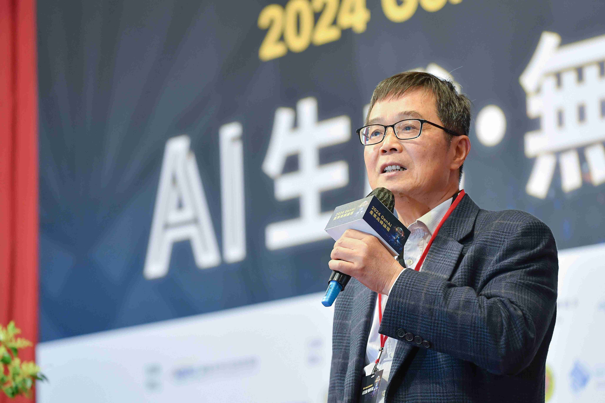
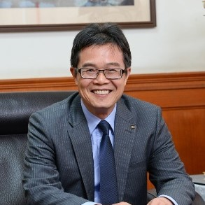

台大機械系 終身特聘教授
NTU ME Distinguished Professor
覺文郁博士是智慧製造與精密量測領域的先驅，在工具機產業有重大貢獻。他擁有超過 150 件專利，發表 300 餘篇學術論文，完成 60 餘件技術移轉。他開發的五軸光學式精度量測系統獲得多國專利認證，是全球首創的非接觸式工具機精度檢測儀器。憑藉其在產學合作的卓越成就，他獲得多項殊榮，包括教育部國家產業大師獎、東元科技獎等重要獎項。
Dr. Wen-Yuh Jywe is a pioneer in intelligent manufacturing and precision measurement, with significant contributions to the machine tool industry. He holds over 150 patents and has published more than 300 academic papers, with over 60 technology transfers. His innovative five-axis optical precision measurement system, patented in multiple countries, is the world's first non-contact precision detection instrument for machine tools. His outstanding achievements in industry-academia collaboration have earned him numerous prestigious awards, including the National Industry Master Award from the Ministry of Education and the TECO Award.
工具機量測技術
Machine Tool Measurement Technology
精密智慧製造技術
Precision Intelligent Manufacturing Technology
工業生成式 AI 應用
Industrial Generative AI Applications
異質設備通訊與 AI 邊緣運算技術開發
Development of Heterogeneous Equipment Communication and AI Edge Computing Technology
AI 加工品質異常檢知
AI-based Detection of Machining Quality Anomalies
機械系館 324 室 / Room 324, Mechanical Engineering Building
未來研究方向：工業生成式AI、多軸 CNC 自主化精密檢測校正技術、異質設備通訊與 AI 邊緣運算技術開發、CNC 精密組裝線數位化管理應用技術開發、CNC 加工設備防護技術、AI 加工品質異常檢知、CNC
刀具壽命管理技術。
Future Research Directions: Industrial generative AI, multi-axis CNC automated precision inspection and calibration
technology,
Heterogeneous equipment communication and AI edge computing technology development, Digital management
and application technology for CNC precision assembly lines,
CNC machining equipment protection technology, AI-based machining quality anomaly detection, CNC tool
life management technology.
僅列示近年（2016 起）主持之較大型計劃
Only the larger projects hosted in recent years (2016 onwards) are shown
執行中 In progress
1
總經費 Total fund (NTD)
600million +